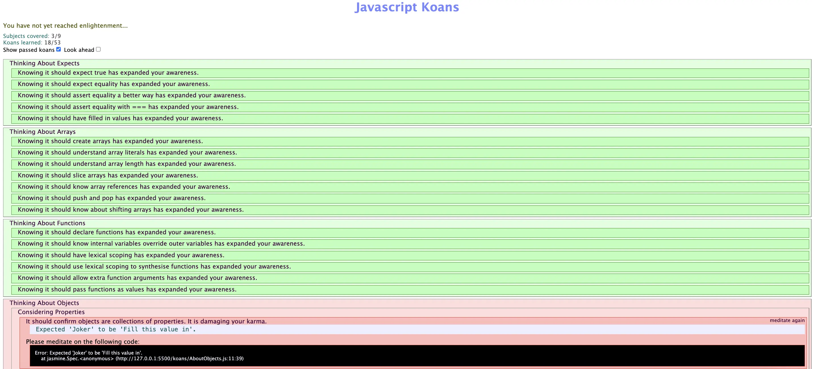

Developpement FrontEnd en Javascript
- MON
- 2024-2025
- temps 1
- Developpement FrontEnd
- JavaScript
- Thomas Merle
Ce MON a pour objectif de m'initier au language JavaScript pour coder le FrontEnd de mon 1er site de DarkKitchen. Pour ce faire, j'ai suivi les cours de Mr Brucker de développement Web sur le site do-it ainsi que les MON des élèves des années précédentes. J'ai également suivi le tutoriel W3School qui est accompagné de petits exercices sur un éditeur en ligne. La plus grande partie du MON a été passé sur le suivi d'un tutoriel javascrip-koans, dont le code a été téléchargé sur GitHub et qui propose d'apprendre la language JavaScript à partir d'une série d'exercices de code à trous qui doivent passer différents tests.
Languages HTML/CSS
Quelques phrases permettant de connaître, sans jargon ni blabla, le contenu de ce MON. On oubliera pas de donner :
- le niveau et les prérequis nécessaires en utilisant la balise
prerequis - les autres POK & MON en rapport en utilisant la balise
lien
Table des matières
- Table des matières
- Contenu
- Présentation du tutoriel javascript-koans
- Tutoriel W3School JS
- Horodateur
Contenu
Présentation du tutoriel javascript-koans
1. Généralités
Basé sur le tutoriel de Edgecase Ruby koans, l'objectif des koans Javascript est d'enseigner la programmation Javascript par le biais de tests et de code à trous.
Lien vers le code : JavaScript koans
Lors de la première execution, une erreur d'exécution apparaît, ainsi qu'une indication qui montre où l'erreur s'est produite. L'objectif est de faire disparaître l'erreur dans le code. En corrigeant chaque erreur, je vais apprendre une notion particulière sur le langage Javascript et la programmation fonctionnelle en général.
Le tutoriel d'apprentissage Javascript commence dans le fichier koans/AboutExpects.js. Ces premiers koans sont assez simples au départ! Au fur et à mesure que je progresse dans les koans, de plus en plus de syntaxe Javascript est introduite, ce qui m'a permis de résoudre des problèmes de plus en plus compliqués et d'utiliser des techniques plus avancées.
2. Running the koans
Pour compléter les exercices et visualiser le passage des tests, il suffit de RUN le fichier KoansRunnner.html dans le navigateur du système, ici Google Chrome. Pour ce faire j'ai dû télécharger l'extension RunServer de VsCode.
La première erreur se trouve dans koans/AboutExpects.js. Je l'ai corrigé et ai lancé le premier test. A chaque complétion, il suffit de rafraîchir le navigateur pour voir si on passe les tests ou non, jusqu'à ce que tous les tests deviennent verts.
Le gestionnaire de tests utilisé est Jasmine avec un visualiseur de rapport personnalisé.
3. Premier exemple d'exercice : AboutArrays complété
describe("About Arrays", function() {
//We shall contemplate truth by testing reality, via spec expectations.
it("should create arrays", function() {
var emptyArray = [];
expect(typeof(emptyArray)).toBe("object"); //A mistake? - http://javascript.crockford.com/remedial.html
expect(emptyArray.length).toBe(0);
var multiTypeArray = [0, 1, "two", function () { return 3; }, {value1: 4, value2: 5}, [6, 7]];
expect(multiTypeArray[0]).toBe(0);
expect(multiTypeArray[2]).toBe('two');
expect(multiTypeArray[3]()).toBe(3);
expect(multiTypeArray[4].value1).toBe(4);
expect(multiTypeArray[4]["value2"]).toBe(5);
expect(multiTypeArray[5][0]).toBe(6);
});
it("should understand array literals", function () {
var array = [];
expect(array).toEqual([]);
array[0] = 1;
expect(array).toEqual([1]);
array[1] = 2;
expect(array).toEqual([1, 2]);
array.push(3);
expect(array).toEqual([1, 2, 3]);
});
it("should understand array length", function () {
var fourNumberArray = [1, 2, 3, 4];
expect(fourNumberArray.length).toBe(4);
fourNumberArray.push(5, 6);
expect(fourNumberArray.length).toBe(6);
var tenEmptyElementArray = new Array(10);
expect(tenEmptyElementArray.length).toBe(10);
tenEmptyElementArray.length = 5;
expect(tenEmptyElementArray.length).toBe(5);
});
it("should slice arrays", function () {
var array = ["peanut", "butter", "and", "jelly"];
expect(array.slice(0, 1)).toEqual(['peanut']);
expect(array.slice(0, 2)).toEqual(['peanut', 'butter']);
expect(array.slice(2, 2)).toEqual([]);
expect(array.slice(2, 20)).toEqual(['and', 'jelly']);
expect(array.slice(3, 0)).toEqual([]);
expect(array.slice(3, 100)).toEqual(['jelly']);
expect(array.slice(5, 1)).toEqual([]);
});
it("should know array references", function () {
var array = [ "zero", "one", "two", "three", "four", "five" ];
function passedByReference(refArray) {
refArray[1] = "changed in function";
}
passedByReference(array);
expect(array[1]).toBe('changed in function');
var assignedArray = array;
assignedArray[5] = "changed in assignedArray";
expect(array[5]).toBe('changed in assignedArray');
var copyOfArray = array.slice();
copyOfArray[3] = "changed in copyOfArray";
expect(array[3]).toBe('three');
});
it("should push and pop", function () {
var array = [1, 2];
array.push(3);
expect(array).toEqual([1, 2, 3]);
var poppedValue = array.pop();
expect(poppedValue).toBe(3);
expect(array).toEqual([1, 2]);
});
it("should know about shifting arrays", function () {
var array = [1, 2];
array.unshift(3);
expect(array).toEqual([3, 1, 2]);
var shiftedValue = array.shift();
expect(shiftedValue).toEqual(3);
expect(array).toEqual([1, 2]);
});
});
4. 2ème exemple d'exercice : AboutFunctions complété
describe("About Functions", function() {
it("should declare functions", function() {
function add(a, b) {
return a + b;
}
expect(add(1, 2)).toBe(3);
});
it("should know internal variables override outer variables", function () {
var message = "Outer";
function getMessage() {
return message;
}
function overrideMessage() {
var message = "Inner";
return message;
}
expect(getMessage()).toBe('Outer');
expect(overrideMessage()).toBe('Inner');
expect(message).toBe('Outer');
});
it("should have lexical scoping", function () {
var variable = "top-level";
function parentfunction() {
var variable = "local";
function childfunction() {
return variable;
}
return childfunction();
}
expect(parentfunction()).toBe('local');
});
it("should use lexical scoping to synthesise functions", function () {
function makeMysteryFunction(makerValue)
{
var newFunction = function doMysteriousThing(param)
{
return makerValue + param;
};
return newFunction;
}
var mysteryFunction3 = makeMysteryFunction(3);
var mysteryFunction5 = makeMysteryFunction(5);
expect(mysteryFunction3(10) + mysteryFunction5(5)).toBe(23);
});
it("should allow extra function arguments", function () {
function returnFirstArg(firstArg) {
return firstArg;
}
expect(returnFirstArg("first", "second", "third")).toBe('first');
function returnSecondArg(firstArg, secondArg) {
return secondArg;
}
expect(returnSecondArg("only give first arg")).toBe(undefined);
function returnAllArgs() {
var argsArray = [];
for (var i = 0; i < arguments.length; i += 1) {
argsArray.push(arguments[i]);
}
return argsArray.join(",");
}
expect(returnAllArgs("first", "second", "third")).toBe('first,second,third');
});
it("should pass functions as values", function () {
var appendRules = function (name) {
return name + " rules!";
};
var appendDoubleRules = function (name) {
return name + " totally rules!";
};
var praiseSinger = { givePraise: appendRules };
expect(praiseSinger.givePraise("John")).toBe('John rules!');
praiseSinger.givePraise = appendDoubleRules;
expect(praiseSinger.givePraise("Mary")).toBe('Mary totally rules!');
});
});
5. 3ème exemple d'exercice : AboutObjects non complété
describe("About Objects", function () {
describe("Properties", function () {
var megalomaniac;
beforeEach(function () {
megalomaniac = { mastermind: "Joker", henchwoman: "Harley" };
});
it("should confirm objects are collections of properties", function () {
expect(megalomaniac.mastermind).toBe(FILL_ME_IN);
});
it("should confirm that properties are case sensitive", function () {
expect(megalomaniac.henchwoman).toBe(FILL_ME_IN);
expect(megalomaniac.henchWoman).toBe(FILL_ME_IN);
});
});
it("should know properties that are functions act like methods", function () {
var megalomaniac = {
mastermind : "Brain",
henchman: "Pinky",
battleCry: function (noOfBrains) {
return "They are " + this.henchman + " and the" +
Array(noOfBrains + 1).join(" " + this.mastermind);
}
};
var battleCry = megalomaniac.battleCry(4);
expect(FILL_ME_IN).toMatch(battleCry);
});
it("should confirm that when a function is attached to an object, 'this' refers to the object", function () {
var currentDate = new Date();
var currentYear = (currentDate.getFullYear());
var megalomaniac = {
mastermind: "James Wood",
henchman: "Adam West",
birthYear: 1970,
calculateAge: function () {
return currentYear - this.birthYear;
}
};
expect(currentYear).toBe(FILL_ME_IN);
expect(megalomaniac.calculateAge()).toBe(FILL_ME_IN);
});
describe("'in' keyword", function () {
var megalomaniac;
beforeEach(function () {
megalomaniac = {
mastermind: "The Monarch",
henchwoman: "Dr Girlfriend",
theBomb: true
};
});
it("should have the bomb", function () {
var hasBomb = "theBomb" in megalomaniac;
expect(hasBomb).toBe(FILL_ME_IN);
});
it("should not have the detonator however", function () {
var hasDetonator = "theDetonator" in megalomaniac;
expect(hasDetonator).toBe(FILL_ME_IN);
});
});
it("should know that properties can be added and deleted", function () {
var megalomaniac = { mastermind : "Agent Smith", henchman: "Agent Smith" };
expect("secretary" in megalomaniac).toBe(FILL_ME_IN);
megalomaniac.secretary = "Agent Smith";
expect("secretary" in megalomaniac).toBe(FILL_ME_IN);
delete megalomaniac.henchman;
expect("henchman" in megalomaniac).toBe(FILL_ME_IN);
});
it("should use prototype to add to all objects", function () {
function Circle(radius)
{
this.radius = radius;
}
var simpleCircle = new Circle(10);
var colouredCircle = new Circle(5);
colouredCircle.colour = "red";
expect(simpleCircle.colour).toBe(FILL_ME_IN);
expect(colouredCircle.colour).toBe(FILL_ME_IN);
Circle.prototype.describe = function () {
return "This circle has a radius of: " + this.radius;
};
expect(simpleCircle.describe()).toBe(FILL_ME_IN);
expect(colouredCircle.describe()).toBe(FILL_ME_IN);
});
});
6. Passage des tests
Voici comment se présente la page de passage des tests pour suivre notre avancée dans le tutoriel :

Tutoriel W3School JS
Comme pour les languages HTML et CSS, j'ai utilisé le tutoriel W3School pour apprendre les bases de JS. J'ai suivi les cours puis réalisé chaque exercices de chaque partie grâce à l'éditeur de code en ligne. Ces tutoriels sont vraiment bien fiat pour ceux qui veulent apprendre les bases des languages du FrontEnd, même s'ils sont très longs car traitent de toutes les notions de chaque language, donc difficile de faire le tri sur ce dont on a besoin dès le départ de l'apprentissage.
1. Variables
Les variables en JS peuvent être déclarées selon 4 possibilités :
- automatiquement
- utilisant
var - utilisant
const - utilisant
let
Comment choisir parmi ces possibilités ?
- Il faut toujours déclaré ses varaiables
- Toujours utiliser
constsi la variables est fixe - Toujours utiliser
constsi le type de variable est fixe (Arrays and Objects) - Utiliser seulement ``letv` si on ne peut utiliser const
- Utiliser var seulement pour les anciens navigateurs.
Toutes les variables en JS sont définis par des identificateurs qui sont uniques. On peut leur donner des noms court (x ou y) ou des noms plus descriptifs comme age, titre, couleur etc.
Voici un tableau récapitulant les utilisation des différrents types de déclarations de variables :
| Scope | Redeclare | Reassign | Hoisted | Binds this | |
|---|---|---|---|---|---|
var |
No | Yes | Yes | Yes | Yes |
let |
Yes | No | Yes | No | No |
const |
Yes | No | No | No | No |
2. Objets
En JS, on utlise des objets qui possèdent plusieurs propriétés que l'on définit et on peut ensuite accéder à ces propriétés. Prenons l'exemple d'une voiture comme dans le tutoriel :
const car = {
"name": "Fiat",
"model": "500",
"weight":800,
"color": "white"
};
L'objet car possède 4 propriétés : name, model, weight et color.
Il est également possible de créer un objet et y ajouter ses propriétés :
// Create an Object
const car = {};
// Add Properties
car.name= "Fiat";
car.model= "500";
car.weight= 800;
car.color= "white"
En utilisant le mot clé new Object () cela donne :
// Create an Object
const car = new Object{};
// Add Properties
car.name= "Fiat";
car.model= "500";
car.weight= 800;
car.color= "white"
Il est possible ensuite d'accéder au différentes propriétés de l'objet de la manière suivante :
objectName.propertyName
objectName["propertyName"]
Ou d'utiliser le mot clé let :
let weight = car.weight;
let weigjt = car["weight"];
let weight = car[x];
Il est possible d'ajouter et d'en supprimer des nouvelles propriétés à tous les objets :
//Add property
car.launch = "2015";
//Delete property
delete car.weight;
Les objets possèdent des propriétés mais également des Méthodes, ce sont des actions réalisées par les objets qui sont définies comme des fonctions et stockées sous forme de propriétés de l'objet :
const car = {
"name": "Fiat",
"model": "500",
"weight":800,
"color": "white"
modelName : function() {
return this.name + " " + this.model};
};
En JS, les objets ne sont pas figés et leurs propriétés peuvent être modifiées :
//Create an Object
const car = {
"name": "Fiat",
"model": "500",
"weight":800,
"color": "white";
// Create a copy
const x= car ;
// Change Color in both
x.color = "blue";
};
Il y a plusieurs façon d'afficher un Objet en JS :
- On affiche les propriétés de l'objet par nom
//Create an Object
const car = {
"name": "Fiat",
"model": "500",
"weight":800,
"color": "white";
};
// Display Properties
document.getElementById("demo").innerHTML =
car.name + "," + car.model + "," + car.color;
- On affiche les propriétés de l'objet dans une boucle
//Create an Object
const car = {
"name": "Fiat",
"model": "500",
"weight":800,
"color": "white";
};
// Build a Text
let text = "";
for (let x in car) {
text += car[x] + " ";
};
// Display Properties
document.getElementById("demo").innerHTML=text;
- On affiche l'objet à l'aide de
Object.values()
//Create an Object
const car = {
"name": "Fiat",
"model": "500",
"weight":800,
"color": "white";
};
// Create an Array
const myArray = Object.values(car);
// Display the Array
document.getElementById("demo").innerHTML = myArray;
3. Classes
Il est souvent utile de créer plusieurs objets du même type. Pour créer un type d'objet, nous utilisons une fonction constructeur d'objet. Il est considéré comme une bonne pratique de nommer les fonctions constructeur avec une première lettre majuscule.
function Car(name, model, weight, color) {
this.name = name;
this.model = model;
this.weight = weight;
this.color = color;
}
Dans la fonction constructeur, thisn'a aucune valeur. La valeur de this deviendra le nouvel objet lorsqu'un nouvel objet est créé.
Nous pouvons maintenant l'utiliser new car() pour créer de nombreux nouveaux objets Car :
const FatherCar = new car("Audi", "Q7", 1500, "black");
const GrandFatherCar = new car("Renaud", "408", 900, "grey");
const myCar = new car("Lamborghini", "Aventador", 2000, "orange");
Une valeur donnée à une propriété sera une valeur par défaut pour tous les objets créés par le constructeur :
function Car(name, model, weight, color) {
this.name = name;
this.model = model;
this.weight = weight;
this.color = color;
this.launch = "2015";
}
Une fonction constructeur peut également avoir des méthodes, qu'il est possible d'ajouter à n'importe quel objet :
FatherCar.changeModel = function (model) {
this.model = model;
}
La nouvelle méthode sera ajoutée à FatherCar, et pas à d'autres objets car.
Néanmoins, il est impossible d'ajouter une nouvelle méthode à une fonction constructeur d’objet avec la même méthode, cela nous renverra une erreur du type TypeError: FatherCar.changeModel is not a function. L'ajout d'une nouvelle méthode doit être effectué sur le prototype de la fonction constructeur :
Car.prototype.changeModel = function (model) {
this.model = model;
}
FatherCar.changeModel("RS Q7");
La fonction changeModel() attribue la valeur du model à la propriété de la Car model, en remplaçant this par FatherCar.
JS dispose de constructeurs intégrés pour tous les objets communs :
new Object() // A new Object object
new Array() // A new Array object
new Map() // A new Map object
new Set() // A new Set object
new Date() // A new Date object
new RegExp() // A new RegExp object
new Function() // A new Function object
Horodateur
Toutes les séances et le nombre d'heure que l'on y a passé.
| Date | Heures passées | Indications |
|---|---|---|
| 12/09 | 0,5H | Discussion avec Sofiane pour trouver le tutoriel à suivre, téléchargment et prise en main du code |
| 13/09 | 1H | Exercice 1 : AboutExpects |
| 13/09 | 1H | Exercice 2 : AboutArrays |
| 13/09 | 1H | Exercice 3 : AboutFunctions |
| 20/09 | 1H | Exercice 4 : AboutHigherOrderFunctions |
| 20/09 | 1H | Exercice 5 : AboutInheritance |
| 20/09 | 1H | Exercice 5 : AboutMutability |
| 20/09 | 1H | Exercice 6 : AboutObjects |
| 05/10 | 2H | Tuto W3School : Variables, Objets, Classes en JS |
| 09/10 | 1H | Tuto W3School : Constructeurs en JS |